Figure: Enumeration for Product Items
In this tutorial we create a simple report definition which provides an overview on the number of product items that have been sold in a process. Hereby we distinguish between active processes and already completed processes.
Create a model containing an enumeration data with values for product names that can be sold.
You can also import the completed example model provided by Stardust. Therefore download the following ZIP file containing the model ProductSaleModel prepared for this example
You find this model in folder reports. This folder also contains the completed
example report, which you can import as well.
Figure: Enumeration for Product Items
Create a process, e.g. called Sales Process, which reads the product name in the enumeration data. This data will be made accessible as descriptor, e.g. Product.
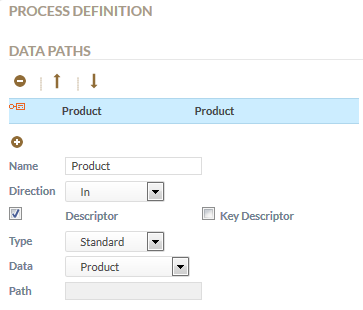
Figure: Product Descriptor
Now deploy your model and start instances of this process. Select different product items and complete or suspend the process instances.
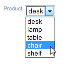
Figure: Selecting different product item values
Switch to the Reporting perspective. Click the Create Ad hoc Report button to create the report definition.
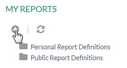
Figure: Creating a new Report
In the Data Source tab keep the default selection to retrieve data about process instances in the Retrieve Data about drop-down list.

Figure: Retrieve data about process instances
Switch to the Data Set tab and keep the default fact Count selected in the Fact selection list. In the Dimension drop-down list select Product, which you find in the Descriptors section.
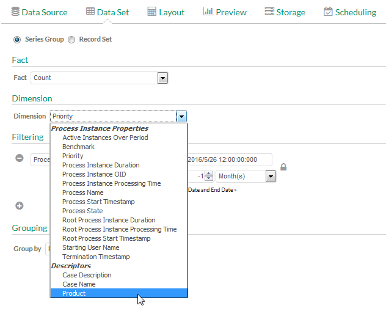
Figure: Select Fact and Dimension
In the Filtering section we create a filter to filter for completed and active processes:
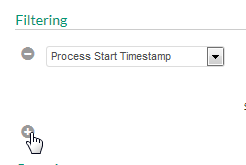
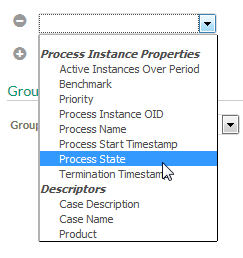
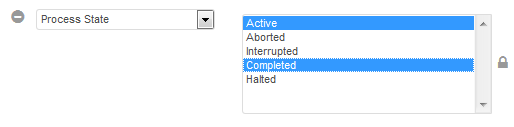
Additionally we will group the data for process states. In the Grouping section Group by drop-down list select Process State.
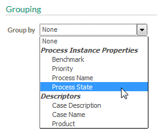
Figure: Select Grouping
Our Data Set should now look like in the image below:
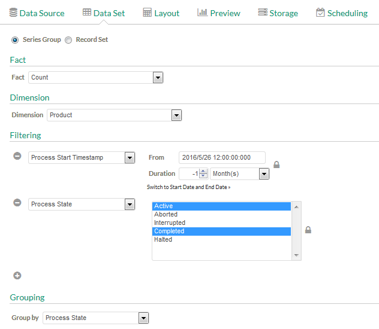
Figure: Report Data Set Settings
Switch to the Layout tab to define how our report should be presented.
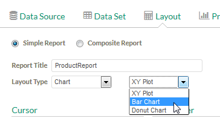
Now the settings for the report layout look similar as shown below:
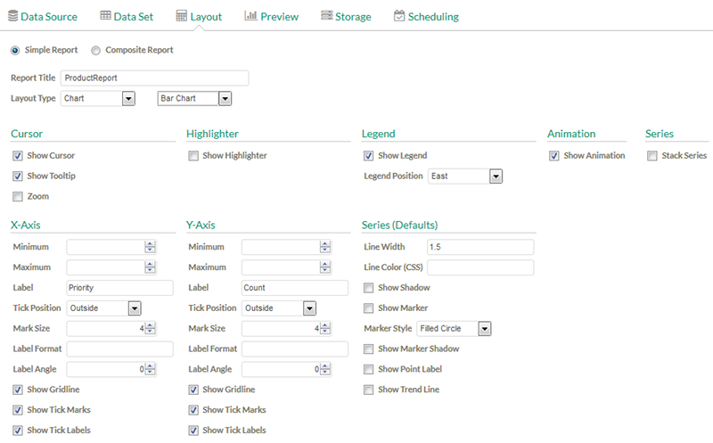
Figure: Layout Settings
Switch to the Preview tab to view a presentation of our report data.
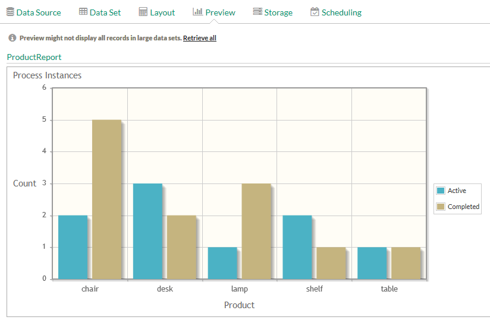
Figure: Report Preview with Bar Chart Layout
Now we like to store our report definition for the role who is assigned to the process mentioned above, e.g. Salesperson.
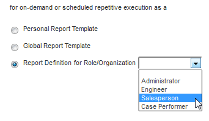
Now click the Save icon in the upper right corner of the view to store the report definition.
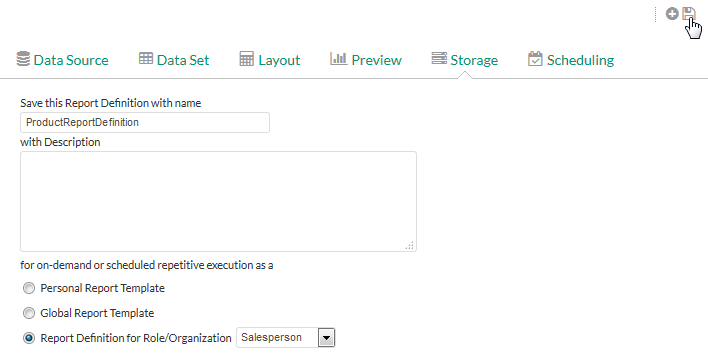
Figure: Storage Settings
The stored report definition now is saved in a folder Salesperson Report Definitions.
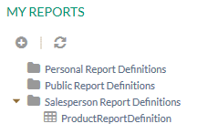
Figure: Stored Report Definition Location